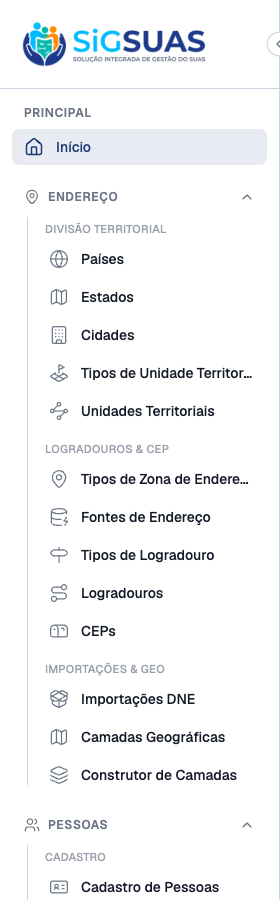
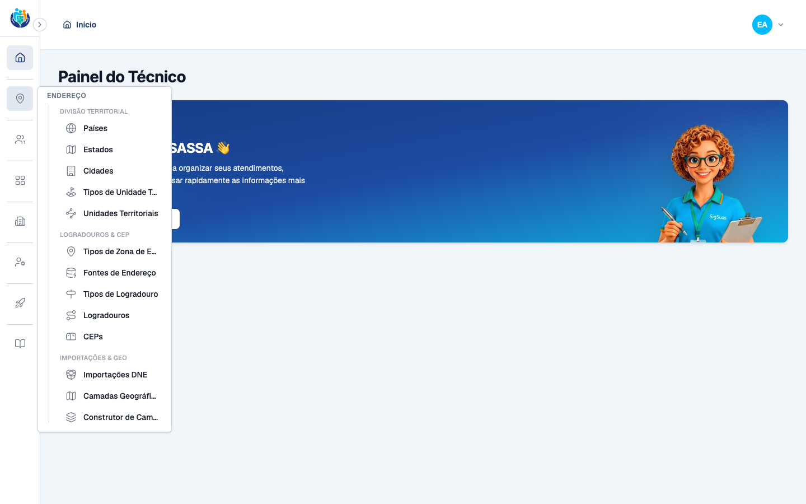
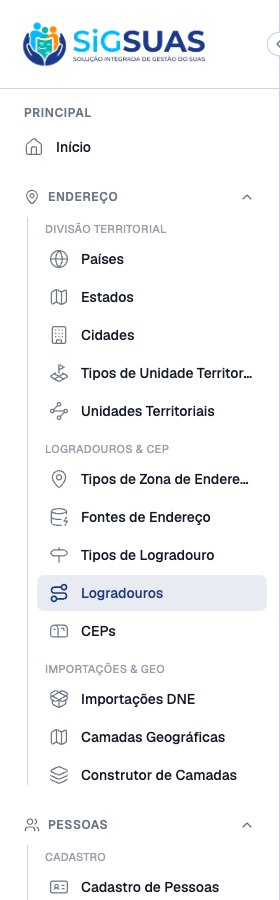

5 Critérios de Aceite verificados: 4 por navegação direta no Admin real (CA01, CA02, CA03, CA04) e CA05 por navegação (item oculto e ausência de título órfão). Todos ATENDIDOS. Os grupos ENDEREÇO e PESSOAS passaram a exibir subgrupos nomeados (nenhum com mais de 8 itens), com uma linha vertical de hierarquia sob o grupo collapsible aberto — no modo expandido e no flyout do modo rail. A subdivisão preservou o estado ativo (isActive), o gating por permissão e não gera títulos órfãos. Apêndice: suíte Vitest do AppSidebar (8/8 verdes), incluindo os casos mapeados a CA01/CA02/CA04/CA05.
| CA | Critério | Status |
|---|---|---|
| CA01 | Grupos longos subdivididos (nenhum subgrupo com mais de 8 itens) | ATENDIDO · navegador |
| CA02 | Agrupamento fiel à referência | ATENDIDO · navegador + automatizado |
| CA03 | Flyout do modo rail espelha a hierarquia | ATENDIDO · navegador |
| CA04 | Item ativo continua sendo detectado | ATENDIDO · navegador |
| CA05 | Permissões preservadas (sem título de subgrupo órfão) | ATENDIDO · navegador |
Critério (Gherkin): Dado os grupos ENDEREÇO e PESSOAS, quando abro cada um no modo expandido, então os itens estão distribuídos em subgrupos nomeados, nenhum subgrupo com mais de 8 itens.
Como foi testado: Login como Super Admin no Admin real (:5174); abrir os grupos ENDEREÇO e PESSOAS no modo expandido e inspecionar a distribuição dos itens em subgrupos.

Critério (Gherkin): Dado a referência Cuida, quando comparo os títulos e a composição dos subgrupos, então correspondem ao que a referência define.
Como foi testado: Comparar títulos e composição dos subgrupos renderizados com a definição pretendida. Observação: o artefato "Cuida" não foi disponibilizado (bloqueio original da HU); a composição segue a proposta documentada no plano (§3) — DIVISÃO TERRITORIAL, LOGRADOUROS & CEP, IMPORTAÇÕES & GEO / CADASTRO, CLASSIFICAÇÕES.
Critério (Gherkin): Dado a barra lateral recolhida (modo rail), quando aciono o ícone de um grupo subdividido, então o flyout exibe os mesmos subgrupos, com os mesmos títulos, na mesma ordem do modo expandido.
Como foi testado: Recolher a sidebar (modo rail) e acionar o ícone do grupo ENDEREÇO; inspecionar o flyout (Popover).

Critério (Gherkin): Dado que estou numa rota de um item movido para dentro de um subgrupo, quando o menu renderiza, então o grupo aparece como ativo e o item aparece destacado — a subdivisão não pode quebrar o isActive nem o estado de abertura persistido.
Como foi testado: Navegar para /app/streets (item Logradouros, dentro do subgrupo LOGRADOUROS & CEP) e observar o estado do menu.

Critério (Gherkin): Dado um admin_operador sem platform-versions.index, quando o menu renderiza após a subdivisão, então o item continua oculto, e um subgrupo que fique inteiramente sem itens visíveis não renderiza título órfão.
Como foi testado: Login como Admin Operador (12345678909, role admin_operador) e inspecionar o menu após a subdivisão.
RUN v2.1.9 /Users/binho/Projetos/esuas-all/admin
✓ src/components/app/AppSidebar.test.ts > AppSidebar > renderiza todos os macro-grupos
✓ src/components/app/AppSidebar.test.ts > AppSidebar > inicia com todos os grupos collapsible abertos
✓ src/components/app/AppSidebar.test.ts > AppSidebar > fecha um grupo de forma independente sem afetar os demais
✓ src/components/app/AppSidebar.test.ts > AppSidebar > auto-expande o grupo que contém a rota ativa
✓ src/components/app/AppSidebar.test.ts > AppSidebar > renderiza os subgrupos nomeados de ENDEREÇO e PESSOAS
✓ src/components/app/AppSidebar.test.ts > AppSidebar > nenhum subgrupo do modelo de menu tem mais de 8 itens
✓ src/components/app/AppSidebar.test.ts > AppSidebar > destaca o item ativo dentro de um subgrupo e mantém o grupo pai ativo
✓ src/components/app/AppSidebar.test.ts > AppSidebar > não renderiza o título de um subgrupo sem itens visíveis por permissão
Test Files 1 passed (1)
Tests 8 passed (8)
Start at 17:50:32
Duration 1.16s (transform 289ms, setup 12ms, collect 579ms, tests 127ms, environment 220ms, prepare 54ms)